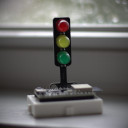

Traffic Light

It's your first day on the job with the city transportation
department and all the traffic lights are flashing red. It's
up to you as a software developer to fix the problem.
An introduction to MicroPython and the development environment.
Click here to get started
Traffic Light Controller
 After learning about how the city's traffic light software works,
it's time to round out your skills, learning about the hardware
and how it works with software to light up the signal lights.
After learning about how the city's traffic light software works,
it's time to round out your skills, learning about the hardware
and how it works with software to light up the signal lights.
An introduction to microcontroller General-Purpose Input/Output
(GPIO), and how software controls the state of microcontroller
pins connected to the Light Emitting Diodes (LEDs).
Click here to get started
Walk Signal
You've learned about GPIOs and how they use 3.3 volt and 0 volt
signals to turn the traffic light LEDs on and off. Now, take it
to the next level and use the ESP32-C3 built-in NeoPixel LED to
act as a walk signal.
An introduction to the NeoPixel LED and how to combine separate
traffic light and walk signal programs into a single cohesive
piece of code that synchronizes both transitions.
Click here to get started